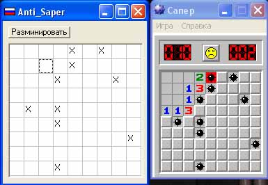

Сегодня мы будем играть в замечательную игру "Сапер". Она идет вместе с ОС (У меня XP). Правила у нее просты - тыкай пока не проиграешь =))
Я пошутил - играть мы не будем, мы напишем АнтиСапер, т.е. программку, которая будет разминировать минное поле этого самого сапера!!!
Поехали..
Для начала скопируем из системной папки сам файл winmine.exe. Сначала осмотрим его внешне. Потыкаем по полю на угад .... ты попал на мину - проиграл, ну ладно, не беда! Смотрим верхнее меню, там есть пункт "Новая игра". Нажимаем и видим, что поле заполнено по новому!!! Давайте посмотрим, что происходит по выбору этого пункта....
Загружаем Сапера в W32Dasm:
видим, что ID этого пункта меню равен [ID=01FEh]. В поиске вбиваем это значениеи ищем... находим это:
именно тут и происходит выбор ашего пункта, идем по этому адресу. А тут:
Хорошо идем в эту процедуру... Она начинается так:
По этим адресам лежат число клеток по X и Y, они (эти адреса нам понадобятся!). Шагая по этой подпрограмме можно найти адрес с которого начинается рэндомно запоняющаяся карта... у меня он равен: 01005360h. Ну и начиная с этого адреса идут клетки поля, если в них находиться значение 8F, значит тут мина, иначе стоит FF, а начало и конец строки определяются как 10h, причем строчки находятся друг от дргуа на интервале 20h.
Этого нам достаточно для написания программы, приступим:
на форме находится sg: TStringGrid...
Вот код:
unit Unit1;
interface
uses
Windows, Messages, SysUtils, Variants, Classes, Graphics, Controls, Forms,
Dialogs, StdCtrls, Grids;
type
TPole = record
x: Byte;
y: Byte;
End;
type
TForm1 = class(TForm)
Button1: TButton;
sg: TStringGrid;
procedure Button1Click(Sender: TObject);
private
SapMap: Tpole;
public
end;
var
Form1: TForm1;
implementation
{$R *.dfm}
procedure TForm1.Button1Click(Sender: TObject);
Var
hWn: HWND;
PID, hProc, dwReaded: DWord;
buf: Byte;
i, r: Dword;
StartAddr: Dword;
begin
hWn := HWND(FindWindow(nil, PChar('Сапер')));
If IsWindow(hWn) Then
Begin
GetWindowThreadProcessId(hWn, PID);
hProc := OpenProcess(PROCESS_VM_READ, False, PID);
Try
If (hProc <> 0) Then
Begin
ReadProcessMemory(hProc, ptr($10056AC), @buf, 1, dwReaded);
SapMap.x := buf;
ReadProcessMemory(hProc, ptr($10056A8), @buf, 1, dwReaded);
SapMap.y := buf;
sg.ColCount := SapMap.x;
sg.RowCount := SapMap.y;
For i := 0 To (sg.ColCount - 1) Do
For r := 0 To (sg.RowCount - 1) Do sg.Cells[i,r] := ' ';
StartAddr := $01005361;
For i := 0 To (SapMap.y - 1) Do
Begin
For r := 0 To (SapMap.x - 1) Do
Begin
ReadProcessMemory(hProc, ptr((i*$20) + StartAddr + r), @buf, 1, dwReaded);
If (buf = $8F) Then sg.Cells[r, i] := 'X';
End;
End;
End;
Finally
CloseHandle(hProc);
End;
End;
end;
end.
А вот результат ее работы (на рисунке):

Удачи!!!